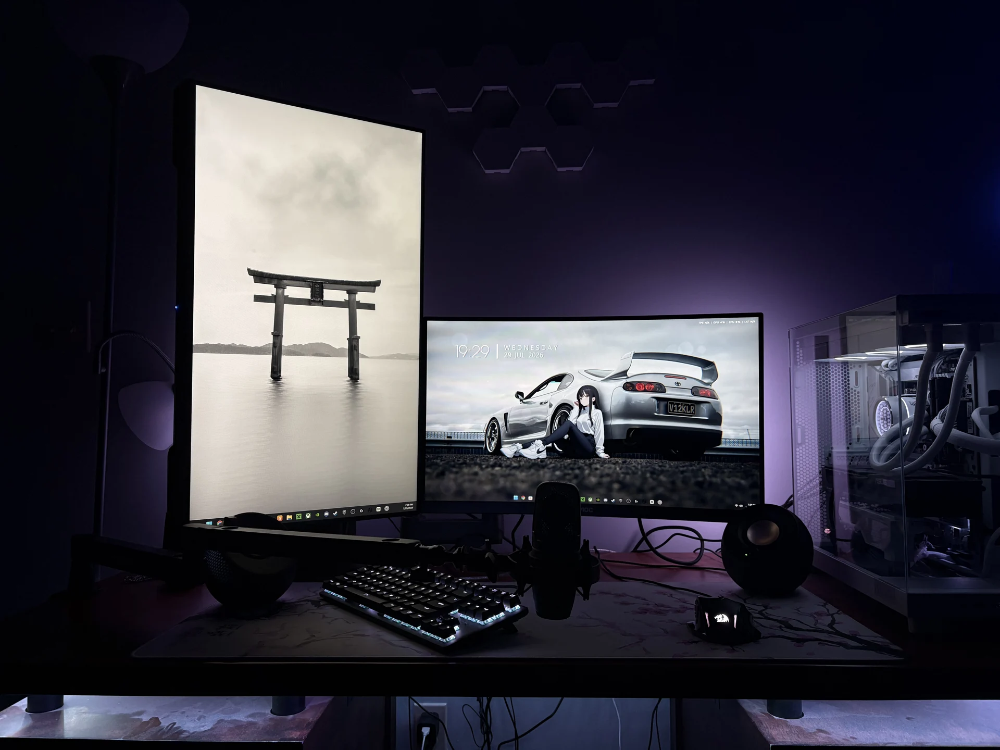

Skip to content
S
/
SKYBLADE
WRLD
Home
About
Setup
Interests
02 / SETUP
My side of the desk
.
Japanese-inspired wallpapers. Two monitors. Low lighting.

My current setup.
←
About
Explore my interests
→